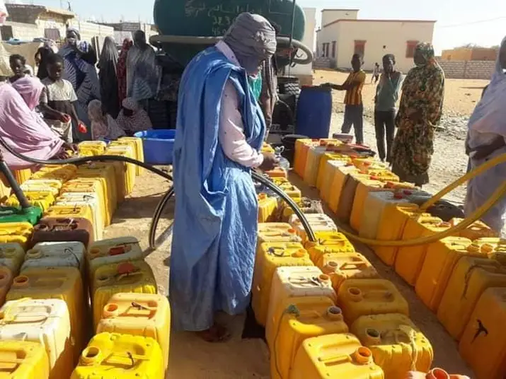
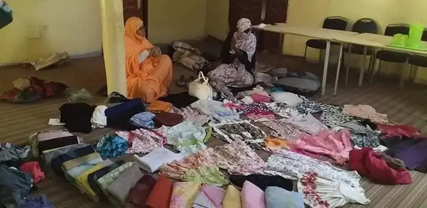

رؤيتنا
أن نكون ضمن أقوى وأفضل الجمعيات الخيرية في البلد خلال 15 سنة قادمة.
مهمتنا ورسالتنا
نحن في خدمة وتطوير المجتمع في مختلف الأنشطة الاجتماعية والاقتصادية، من خلال التكافل الاجتماعي والتعليم والصحة وإدماج ومساعدة ذوي الاحتياجات الخاصة والطبقات غير القادرة وتشجيع العمل التطوعي.
نحن نهتم بالأيتام والأرامل والمطلقات بلا عائل وذوي الاحتياجات الخاصة وأسر السجناء والغير قادرين على العمل وكبار السن بلا عائل والحالات الصحية والحالات الطارئة التي تعرض بيت صاحبها للتلف والأضرار بسبب حادث عرضي. جميع هذه الأمور تدخل في الأنشطة التي نقدمها.
الأنشطة
- ذوي الهمم (همتك معنا)
- المساعدات (تفريج كربة)
- دعم الطلاب
- الحالات الإنسانية (مؤازرة)
- الإطعام / السلات الغذائية
- دعم الأيتام
- التبرعات
- أنشطة ثقافية متنوعة
- برتوكولات وتبادل الآراء والتعاون مع الجمعيات الأخرى
النشاطات السابقة

سقاية

كسوة أطفال يتامى